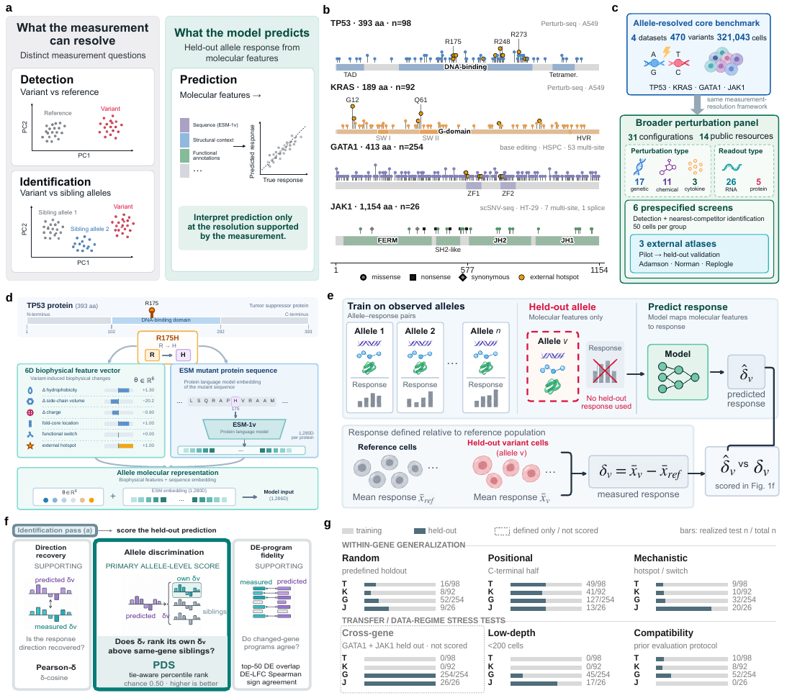

TP53
98 variants0.472split-half PDS · 95% CI 0.441–0.505
- Pairwise-resolvable pairs
- 0.0%
- Native unrankable
- 100%
- Top-1 split-half recovery
- 0.45%
PertResolve / measurement-resolution framework
A benchmark cannot support biological distinctions that its own measurements do not reproducibly resolve.
PertResolve separates measurement questions from model questions, quantifies which perturbation distinctions reproduce in the experiment, and interprets prediction performance only at that supported resolution.

Measure the distinction first. Interpret the prediction second.
PertResolve keeps measurement support and model performance separate. Detection asks whether a perturbation differs from reference; identification asks whether it differs from relevant competitors; split-half reproducibility asks whether the experiment recovers the same structure twice; model-ranking resolution asks which predictor gaps the benchmark can reliably order.
01 / Detection
PertResolve measures whether a perturbation response separates reproducibly from the reference population under disjoint cell sampling.
Detection answers whether there is a measurable response. It does not imply that nearby perturbations can be identified.
The allele-resolved arm tests whether experiments and models can distinguish variants of the same gene. The broader panel asks whether measurement-resolution constraints recur across genetic, chemical and cytokine perturbations, cellular contexts, donors and readout modalities.
| Allele dataset | Variants | Context | Assay |
|---|---|---|---|
| TP53 | 98 | A549 | Perturb-seq |
| KRAS | 92 | A549 | Perturb-seq |
| GATA1 | 254 | Human HSPCs | Base editing |
| JAK1 | 26 | HT-29 | scSNV-seq |
A model may recover a strong gene-level programme while failing to identify the correct allele. PertResolve therefore evaluates within-gene discrimination explicitly and then tests the same measurement logic across a broader perturbation landscape.
A disjoint split-half measurement provides an empirical reference for within-gene discrimination. TP53 and KRAS remain near chance, GATA1 shows partial structure, whereas JAK1 supports substantially stronger allele-level recovery. The four genes therefore expose different measurement regimes before any model is compared.
For TP53 and KRAS, two disjoint measurements of the same allele do not reliably recover within-gene identity. A near-chance model score in this regime cannot be interpreted simply as evidence that the model failed to learn a distinction that the experiment itself supports.
The JAK1 split-half reference reaches 0.807, while the canonical gene-wise best-model summary is 0.448. Here the experimental response contains reproducible allele structure, so the remaining prediction gap is no longer explained by the same measurement limitation.
Pairwise resolvability ranges from 0% for TP53 and KRAS to 78.5% for JAK1. Fine-grained interpretation therefore depends on local competitor geometry rather than perturbation-versus-control separation alone.
Gene-keyed perturbation interfaces evaluated in the manuscript comparison can accept all 470 conditions but collapse variants of the same gene onto the same perturbation representation. A gene-constant reference gives PDS 0.478 (95% CI 0.450–0.504), illustrating why allele-level scoring is a category mismatch when the model input cannot express allele identity.
The broader panel asks whether perturbation responses are reproducibly detectable across biological and technical regimes. Detection-side resolution spans almost the full 0–1 range, shifts across cell contexts and donors, and can differ between RNA and protein readouts.
Fraction of perturbations meeting the detection criterion
Cross-dataset depth is an incomplete proxy for resolution. Controlled analyses instead point to the local separation between a perturbation and its closest competitors, together with sampling depth and benchmark size, as the quantities that determine what can be reproducibly distinguished and ranked.
In the controlled resolution sweep, the median nearest-neighbour signal tracks the split-half discrimination reference more closely than the global signal summary. Fine-grained resolution is therefore governed by the closest confusable alternatives, not by average separation alone.
Parse 10M is the deepest point in the cell-depth comparison, yet donor 1 reaches only 0.256 detection fraction. GSE306429 A549 reaches 1.00 with far fewer cells per perturbation. Depth reduces sampling uncertainty but cannot manufacture an absent or weak response distinction.
The controlled sweep shows monotonic improvement of the split-half discrimination reference with local signal, but model-order recovery is not itself monotonic. Whether a benchmark can rank predictors also depends on the score gap and number of evaluated conditions.
Using only 25 pilot cells per perturbation, pilot effect size predicts the predefined depth-100 rankability label in three genetic screens with high AUROC. A training-free signal-to-noise score retains substantial discrimination without fitting the learned pilot model.
Pilot cells and evaluation cells are disjoint; rankability is defined from split-half signal exceeding the uncertainty width in the held-out depth-100 evaluation slice.
| Dataset | 25-cell learned effect AUROC | 25-cell training-free SNR AUROC |
|---|---|---|
| Replogle | 0.960 | 0.934 |
| Norman | 0.916 | 0.851 |
| Adamson | 0.894 | 0.856 |
PertResolve does not replace prediction metrics with a composite resolution score. It supplies the measurement context needed to interpret them: whether the target distinction is experimentally supported, whether the model representation can express it, and whether the benchmark has enough resolution to order competing predictors.
A perturbation can differ clearly from control yet remain indistinguishable from its nearest biological competitors. Detection and identification therefore answer different measurement questions.
TP53 and KRAS illustrate weak within-gene measurement recovery; JAK1 provides a contrasting regime where the experiment supports allele discrimination but current predictors still leave a large gap.
Even when perturbation responses are measurable, a finite benchmark may not reliably order small model-score differences. Model-ranking resolution must therefore be assessed separately from perturbation detection or identification.
The NumPy-first API accepts a cell-by-feature matrix or fixed representation and reports the measurement quantities separately rather than manufacturing a composite verdict.
Use the bundled demo for a deterministic interface check, or provide your own perturbation labels and reference condition.
from pertresolve.resolution import resolution_report
report = resolution_report(
X,
labels,
control="non-targeting",
depth=50,
)
print(report.summary())Python ≥ 3.10 · NumPy / pandas core · MIT License
The public repository includes the software, benchmark metadata, canonical result tables, analysis entry points and manuscript resources used by this project page.